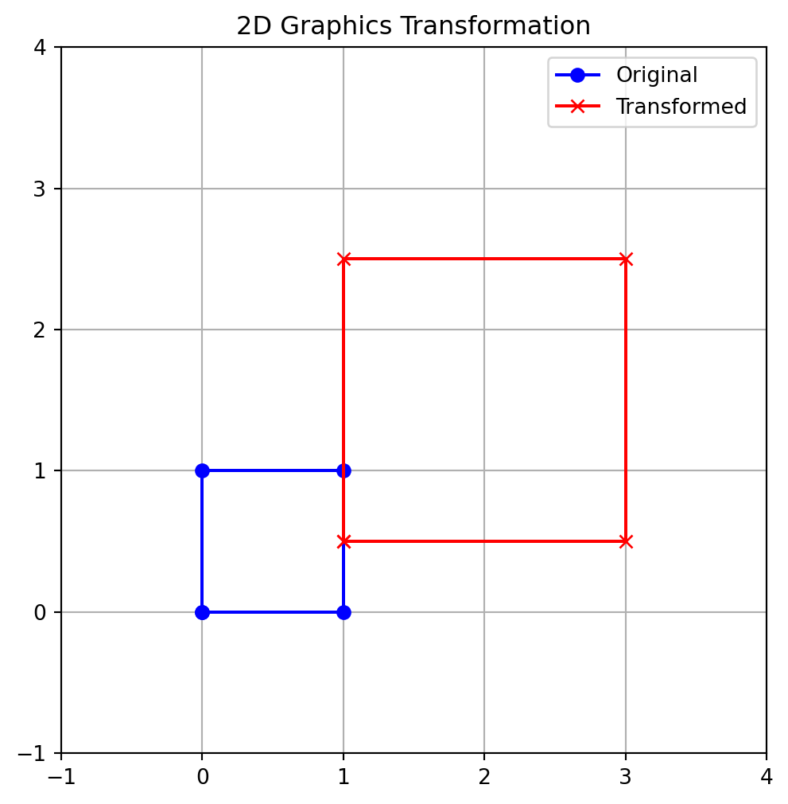

Code
import numpy as np
import matplotlib.pyplot as plt
def create_transform_matrix(scale_x, scale_y, translate_x, translate_y):
# Scale matrix
S = np.array([
[scale_x, 0, 0],
[0, scale_y, 0],
[0, 0, 1]
])
# Translate matrix
T = np.array([
[1, 0, translate_x],
[0, 1, translate_y],
[0, 0, 1]
])
return np.dot(T, S) # Apply scale, then translate
# Define a simple square (homogeneous coordinates)
square_points = np.array([
[0, 1, 1, 0, 0], # X coordinates
[0, 0, 1, 1, 0], # Y coordinates
[1, 1, 1, 1, 1] # Homogeneous coordinate
])
# Create a transform: scale by 2x, then translate by (1, 0.5)
transform_matrix = create_transform_matrix(2, 2, 1, 0.5)
# Apply the transformation
transformed_points = np.dot(transform_matrix, square_points)
# Plotting
fig, ax = plt.subplots(figsize=(6,6))
ax.plot(square_points[0, :], square_points[1, :], 'b-o', label='Original')
ax.plot(transformed_points[0, :], transformed_points[1, :], 'r-x', label='Transformed')
ax.set_xlim(-1, 4)
ax.set_ylim(-1, 4)
ax.set_aspect('equal')
ax.set_title("2D Graphics Transformation")
ax.legend()
plt.grid(True)
plt.show()